SAXS-A-FOLD Tutorial
Contributors: Emre Brookes, Mattia Rocco, and Aaron Householder

Before You Start
- Register on the SAXS-A-FOLD website and verify your email.
- Prepare required files:
- Review SAXS analysis fundamentals and AlphaFold usage for structure retrieval.
- Help for selected entries is provided through pop-ups that activate by moving the mouse cursor over the name or the associated field.
- There is a "Docs" tab on the right of the SAXS-A-FOLD website that includes additional help and details.
Learning Outcomes
By completing this tutorial, you will:
- Define and manage projects in SAXS-A-FOLD.
- Upload and process SAXS data.
- Retrieve AlphaFold structures and perform SAXS calculations.
- Set flexible regions in protein structures.
- Run Monte Carlo simulations.
- Utilize WAXSiS to compute I(q) profiles of selected models.
Introductory Remarks
SAXS-A-FOLD is a platform for analyzing and improving protein structural models, such as those predicted by AlphaFold or derived from solved modules, against SAXS data . This tutorial guides you through core features, including data uploading, structural modeling, refinement, and analysis.
Part I: Define a Project
- Select the "Define Project" tab on SAXS-A-FOLD start page. 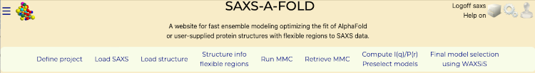
- Enter "Tutorial" in the "Project Name" field.
- Provide an optional description of "SAS Tutorial Example" in the "Description" field to summarize the project's purpose.
- Press "Submit" to save the project. The project will now be accessible from the dropdown menu for future use. 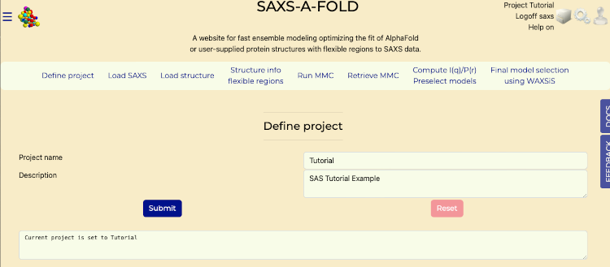
- Once "Submit" has been successful, a message will be shown in the bottom textarea, "Current project is Tutorial".
Starting Page
Define Project tab after submit
Part II: Upload SAXS Data
- Navigate to the "Load SAXS" tab. 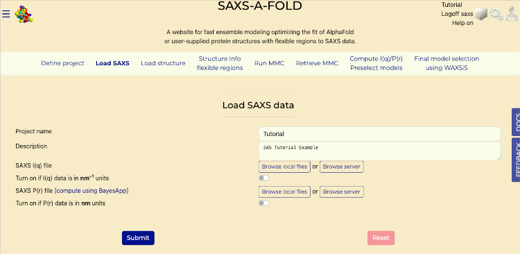
- In the "SAXS I(q) File" section:
- Click "Browse Local Files" to upload the "SASDBP9_A.dat" file from your computer that was downloaded in the "Before You Start" section of this tutorial.
- In the "SAXS P(r) File" section:
- Click "Browse Local Files" to upload the "SSASDBP9_Dmax170_gnom_bin1.dat" file from your computer that was downloaded in the "Before You Start" section of this tutorial.
- Press "Submit" to process the data and generate interactive plots of I(q) and P(r). 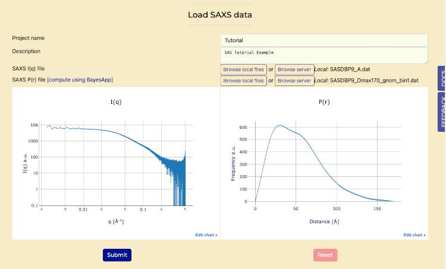
Load SAXS tab
Load SAXS tab after submit
Part III: Retrieve AlphaFold Structures
- Select the "Load Structure" tab. 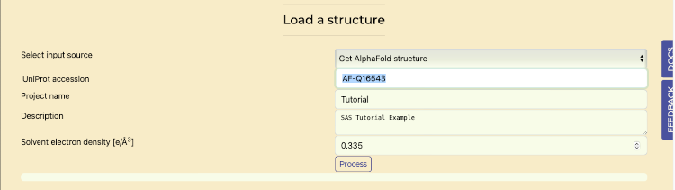
- In the "Select Input Source" dropdown:
- Choose "Get AlphaFold Structure" to access the AlphaFold database.
- Enter the UniProt accession code "AF-Q16543" in the provided field.
- Press "Process" to perform SAXS calculations and generate P(r) and I(q) plots.
- Once it is complete, then scroll down to see generated P(r) and I(q) plots. 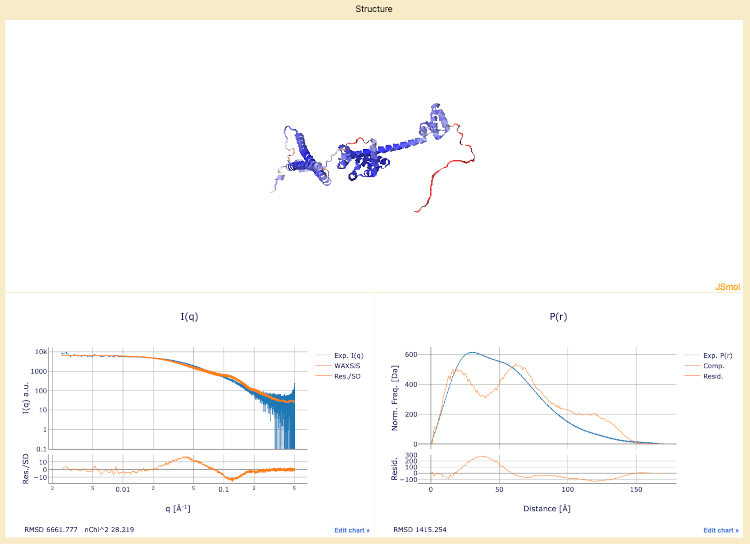
Retrieve AlphaFold on Load Structures tab
AlphaFold Structure: The completed plot for I(q), including the WAXSiS calculated curve, should be shown
Part IV: Flexible Region Analysis
- Navigate to the "Structural Info / Flexible Regions" tab. 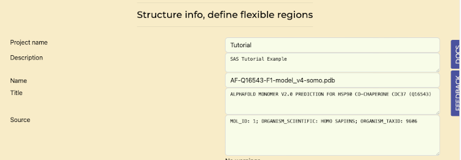
- Scroll down to verify that the "Auto Compute Flexible regions from AlphaFold residue confidence" switch is enabled for automated analysis of AlphaFold-generated structures. 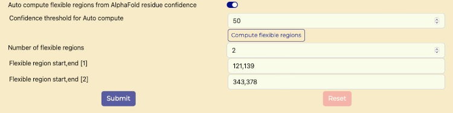
- For "Confidence threshold for Auto compute" field enter "60".
- Press "Compute flexible regions" button.
- Reference image "Flexible Region Analysis switch" for an example of calculated fields populated.
- Submit to save and update the structure visualization. After submit the message "Flexible regions saved" should be displayed below the Submit button.
Flexible Region Analysis tab
Flexible Region Analysis switch
Flexible Region Analysis saved
Part V: Monte Carlo Simulations
- Open the "Run MMC" tab. 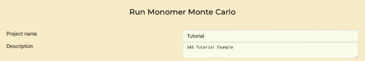
- Update the "number of trials attempts" field to "10000".
- Fields on this tab that are not editable include:
- return to previous structure: set to "20"; after this number of failed steps attempts, the program will reset to the current coordinates.
- temperature (K): set to 300 K.
- molecule type: set to "protein".
- number of flexible regions to vary: defined in the previous tab.
- residue range for each flexible region: defined in the previous tab.
- maximum angle(s): set to 30°, which is the maximum angle that each torsion in each of the flexible regions can sample in a single move.
- Fields that can be edited include:
- structure alignment range: this is the residue range used to spatially align all the MMC-generated models; it should be set to a non-flexible region).
- overlap basis: defined for the overlap checks used to reject structures with clashes. Default: "heavy atoms"; other options, accessible from a pull-down menu, are "all" atoms in case the structure also has H atoms defined, "backbone" atoms, or "enter atom name".
- Scroll to the bottom and press "Submit" to run simulations and view progress in real-time. Once it is complete, continue with next section.
Monte Carlo Simulations tab
Part VI: Analyze MMC Results
- Access the "Retrieve MMC" tab. 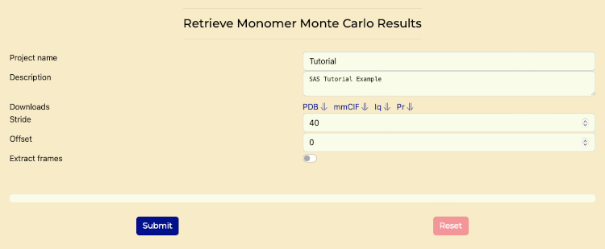
- Set "Stride" to "10". This stride value is for reasonable compute times for tutorial purposes. In practice, the stride should be selected based on the results of the Rg histograms.
- Set "Offset" to "0".
- Generate histograms of Rg values to evaluate the distribution of conformations by pressing the "Submit" button. The goal is to have a reasonably similar Rg districution before and after the stride application.
- Once that is complete then select "Extract frames" switch and press "Submit" button. After that is complete, continue to the next section. 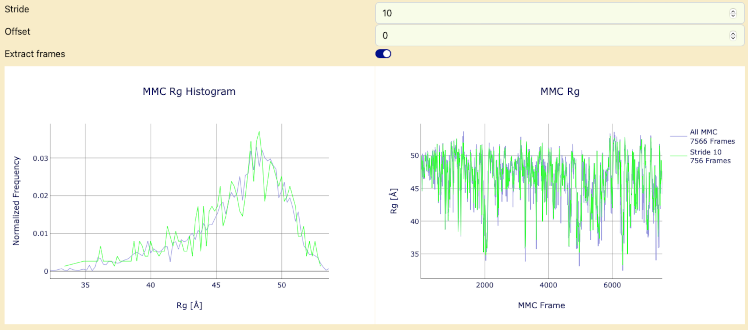
Retrieve MMC tab
Histogram of MMC Results and Rg values
Part VII: Compute I(q) and P(r) Profiles, pre-select structures best fitting the data
- Go to the "Compute P(r) and I(q) / Preselect Models" tab. 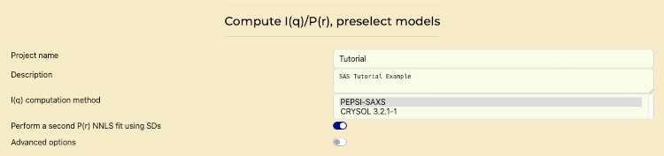
- Use the computation method: PEPSI-SAXS.
- Enable "Perform a Second P(r) NNLS Fit" if additional fitting is required.
- Submit to perform computations and view real-time progress. Once it is complete, continue to the next section. . Progress will show first advancements in the P(r) computations, then on the I(q) computations, both in blocks of 50 curves.
Compute and scale I(q) and P(r) Profiles, Preselect Models
Part VIII: Final Model Selection
- Navigate to the "Final Models Selection Using WAXSiS" tab. 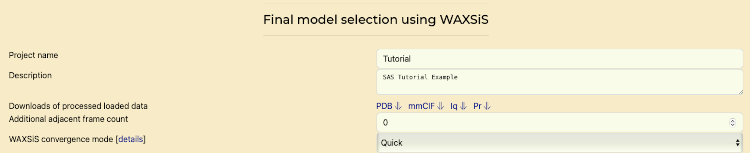
- Click "Submit"
- Review Models 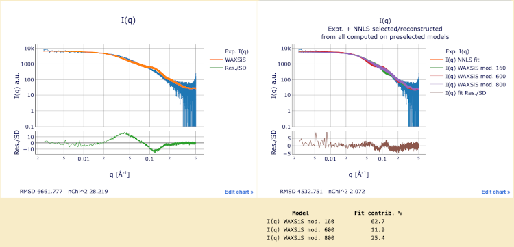
- Review structure 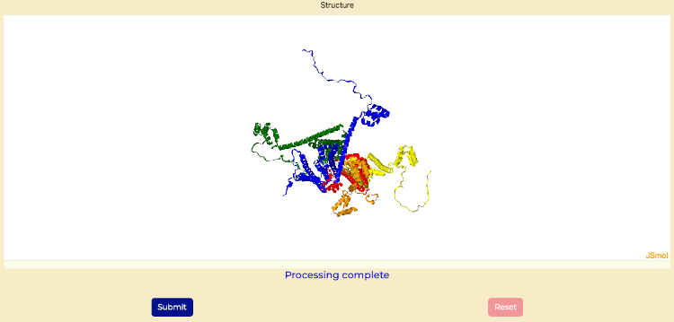
Final Model Selection tab
Final models with WAXSiS computations
Final structure with WAXSiS computations
Challenges
- Go through the tutorial using the following files and values
- Download SAXS I(q) file
- Download SAXS P(r) file
- UniProt accession code "AF-Q9UKA9"
- Flexible regions 1-54 and 273–336
- Hint: Adjust the structure alignment range.
Perspectives
SAXS-A-FOLD integrates SAXS data with AlphaFold predictions for advanced structural analysis. Its comprehensive toolset aids in protein modeling and functional insights.
Help and Feedback
For questions or issues, visit the GitHub Issues page.